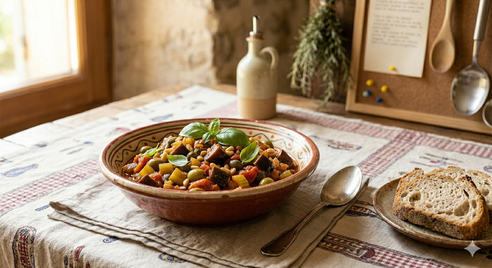

"Un incontournable de l'été qui se bonifie avec le temps."
📜 Le saviez-vous ? Autrefois, ce plat était cuisiné avec un poisson nommé "Capone". Les paysans, ne pouvant se l'offrir, ont remplacé le poisson par l'aubergine. C'est ainsi qu'est né ce trésor de la cuisine "pauvre" mais tellement riche en goût !